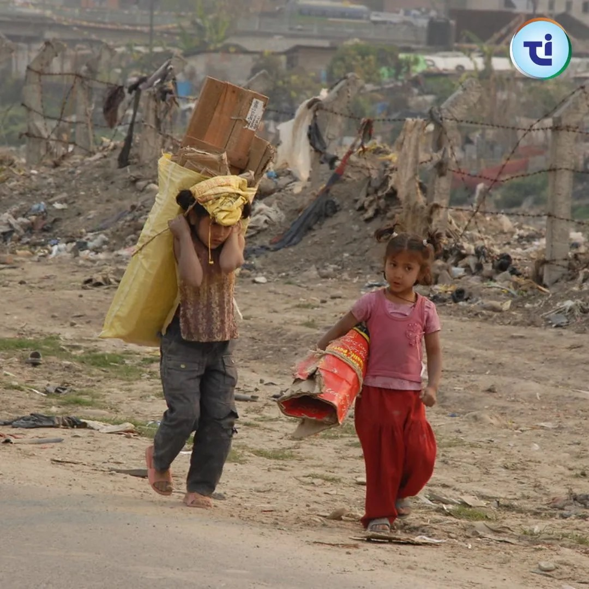

Child labour remains a poignant issue that demands global attention. Despite concerted efforts towards eradication, millions of children worldwide are still deprived of their fundamental rights and forced into exploitative labour practices. This blog sheds light on the critical aspects of child labour, its implications, and the ongoing efforts to combat this social menace.
Child Labour refers to the employment of children in any work that deprives them of their childhood, potential, and dignity, interferes with their schooling, or is harmful to their physical and mental development. It is a violation of basic human rights and has far-reaching consequences for the children involved and society at large.
Child labour is often driven by poverty, lack of access to education, cultural norms, and inadequate enforcement of laws. Children engaged in labour are susceptible to physical, emotional, and psychological abuse. They are deprived of education, perpetuating a cycle of poverty and inequality.
According to the International Labour Organization (ILO), over 152 million children are involved in child labour worldwide, with almost half of them engaged in hazardous work. These children are denied the opportunity to learn and develop essential skills, limiting their future prospects and perpetuating socio-economic disparities.
Child labour manifests in various forms, including agriculture, domestic work, mining, manufacturing, and services. Many children work long hours in hazardous conditions, exposed to dangerous substances and machinery, risking their health and well-being.